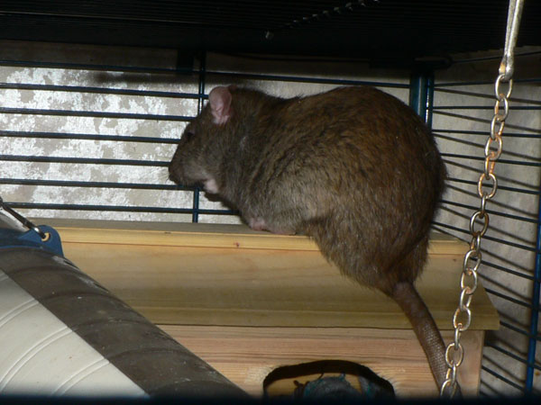
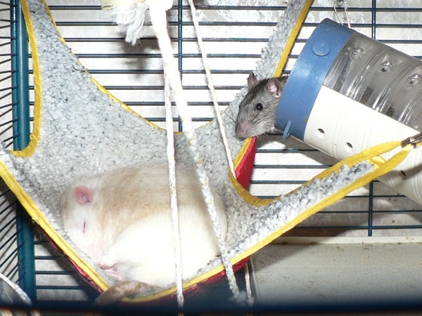
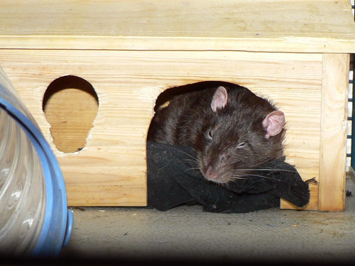
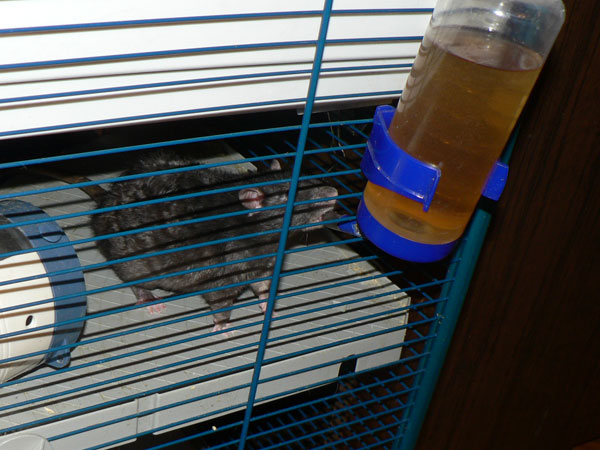
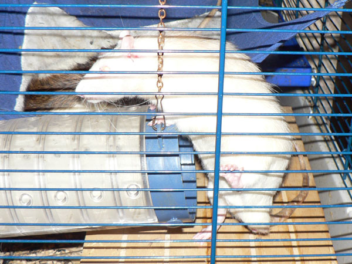
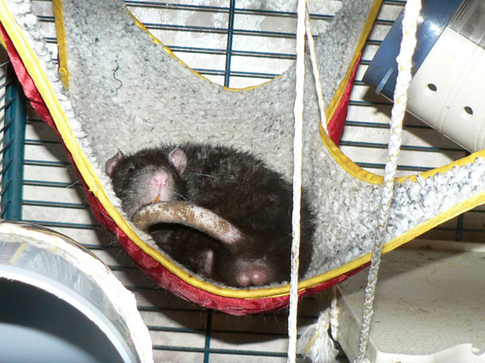
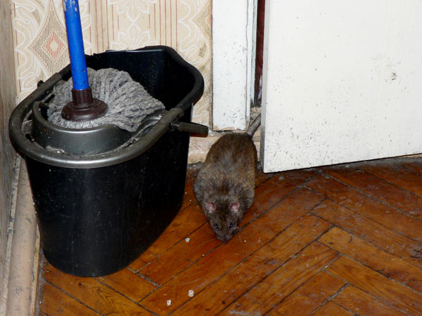
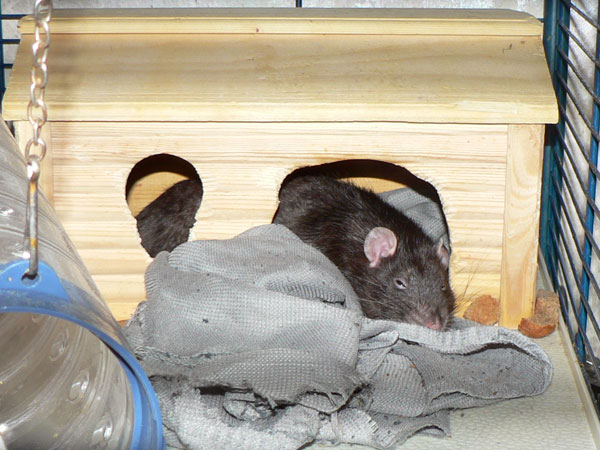
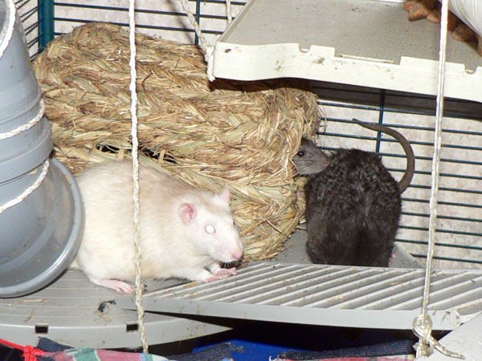

Декабрь 2009

Иннокентий, уже большой и серьезный.

Просто верх клетки, посмотреть на оборудование.
У
кормушки — кучерявый Сеня.

Жорик дрыхнет в гамаке, к нему подбирается на тему разбудить Кеша.

Дон Румата изволит почивать. Нравилось ему там, всю зиму провел в этом гамаке. Потом мы верх клетки реконструировали.

Нагваль Никодим. Хороший крыс был…

Сосискин. Сейчас уже больше похож на Сарделькина, пожалуй.

Сеня. В поилке — не пиво, эхинацея для профилактики.

— Ну, как вы там?́
Жорик и Сеня делают вид, что им не
интересно, когда принесут еду.

Сосискин забирается на трубу. Все же встроенная вспышка в мыльнице — ужос...

Благородные доны в комплекте.

Сентябрь Первый-Крылечкин как бы говорит: «Мужик должен быть с яйцами!».

Дон Рэба решил проинспектировать коридор.

…даже входную дверь проверил.

Наверху — Жоффруа, к животу прижат — дон Рэба, спрыгивает — Сентябрь.

Впереди Сеня и дон Рэба, на балконе слева — кажись, дон Румата и, судя по размерам, Жорик; на заднем плане — Иннокентий.

Нагваль Никодим… Так странно — ушел уже давно, в апреле, а я только сейчас выкладываю фото, когда он живой и бодро спящий.

Сосискин, кучерявая спина Сени и Кеша выглядывает из домика.

Гламурный розовый гамак :-)